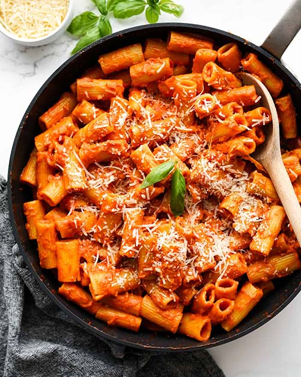

Five Ingredient Pasta

Description
I love pasta, my wife loves pasta... I think almost everybody loves pasta. This is one of our favorite, most made
pasta recipes ever.
Upon closer inspection, you may notice that this is a riff of Marcella
Hazan's Tomato Sauce
recipe. An incredibly popular, super simple and delicious red sauce recipe.
Ingredients
- 2 cups tomatoes (28oz can of whole peeled tomatoes)
- 5 tablespoons butter
- 1 onion, peeled and cut in half
- 3 cloves garlic
- salt
- 1 pound dried pasta
Steps
- Combine the tomatoes, their juices, the butter and onion halves in a saucepan. Add a pinch or two of salt.
- Place over medium heat and bring to a simmer. Cook, uncovered for about 45 minutes. Stir occasionally,
mashing any large pieces of tomato with a spoon. Salt as needed.
- While the sauce cooks, cook pasta according to package instructions
- Discard the onion before tossing the sauce with pasta.
- Garnish with grated cheese and crushed red pepper.
Home